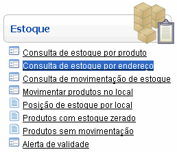
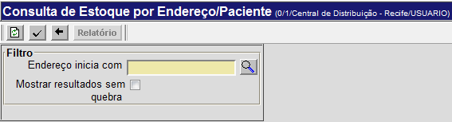
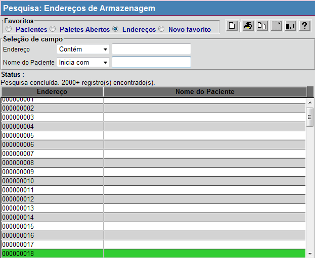
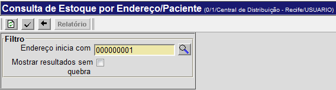
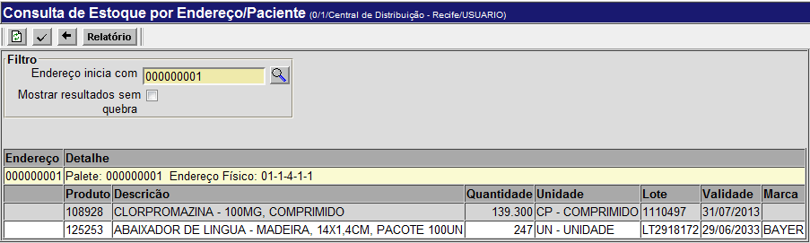
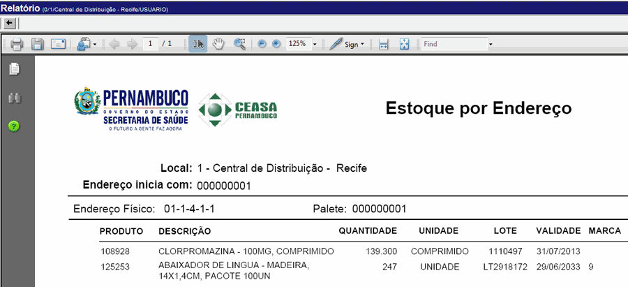

Consulta de Estoque por Endereço [ Voltar ]Utilize este formulário para consultar a quantidade, lote, prazo de validade e outras informações dos produtos existentes em um determinado endereço de armazenagem. O formulário "Consulta de estoque por endereço" encontra-se dentro do menu "Estoque". 
O sistema abrirá a seguinte tela: 
Para gerar uma lista com todos os produtos existentes em um determinado endereço de armazenagem, siga os passos abaixo: 1º
Passo: informe o endereço para esta consulta.
Clique no botão Observação: o usuário visualizará apenas os armazéns do local onde estiver logado. 
2º Passo: selecione o endereço de armazenagem. Clique para selecionar o local desejado. A janela de pesquisa será fechada e o código do local será preenchido automaticamente no campo "Endereço": 
3º
Passo: clique no botão 
4° Passo: clique no botão 5° Passo: clique no botão  Se desejar realizar
outra pesquisa, clique no botão |
 [Procurar] para selecionar o endereço de armazenagem desejado a partir
de uma lista de endereços.
[Procurar] para selecionar o endereço de armazenagem desejado a partir
de uma lista de endereços.  . Os
resultados de sua pesquisa serão exibidos em uma lista na tela:
. Os
resultados de sua pesquisa serão exibidos em uma lista na tela: 
 para imprimir o
relatório "Estoque por endereço".
para imprimir o
relatório "Estoque por endereço". [Voltar] para voltar para a página
anterior.
[Voltar] para voltar para a página
anterior.